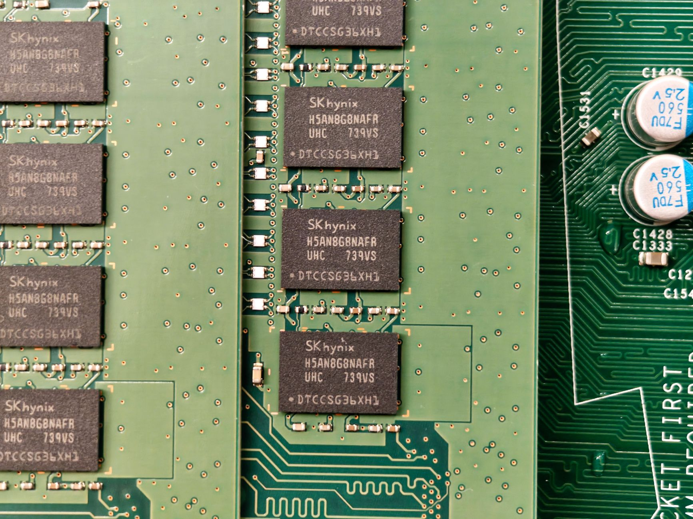

트럼프, 애플에 中 메모리 퇴출 명령…韓 HBM 수요 구조 바뀐다

트럼프 행정부는 애플에 중국산 메모리 반도체(NAND·DRAM) 사용을 중단하도록 비공식 압박을 가했다. 주요 타깃은 YMTC로, 애플은 2022년 중국 내 판매용 아이폰에 YMTC NAND를 탑재하려다 미국 상무부 압박으로 철회한 바 있다. 2026년 현재 YMTC는 232단 3D NAND 양산에 성공하며 기술 격차를 좁혔고, 가격은 삼성·SK 대비 20~30% 저렴하다.
애플의 연간 NAND 조달 규모는 약 60억 달러로, 삼성전자(점유율 약 35%)·SK하이닉스(약 20%)·마이크론(약 18%)이 주요 공급처다. 트럼프 행정부의 압박이 공식 행정명령으로 격상될 경우 YMTC의 잠재 물량(애플 중국 내 판매분 일부 대체 가능 규모 추정 연 5억~8억 달러)이 한국 업체로 이동할 수 있다.
이번 조치는 엔비디아·AMD AI 반도체 수출 허가 의무화(이른바 'AI 디퓨전 룰')와 맞물려 미국이 반도체 공급망 전체를 국가 통제 대상으로 전환하는 흐름을 보여준다. 트럼프 행정부는 2025년 10월부터 AI 반도체 수출 허가 의무화를 추진 중이며, 완성품 단계의 메모리 소싱 규제는 그 연장선이다.
미중 정상회담에서 반도체 분야 합의가 재차 불발되면서 미국의 대중 반도체 규제는 칩 제조 장비에서 소재·완성품 구매 단계까지 전방위로 확대되고 있다. 중국은 2025년 자국 AI 서버 수요의 70% 이상을 화웨이 Ascend 910B·910C 칩으로 대체하는 데 성공했으나, 메모리 HBM 분야는 YMTC의 기술 한계로 여전히 대외 의존 구조가 유지된다.
애플 압박의 핵심 의미는 '칩 자체' 규제에서 '조달 결정' 규제로의 전환이다. 그동안 미국 정부는 중국산 반도체를 직접 금지하지 않고 수출통제로 기술 유입을 차단했다. 이번 조치는 미국 기업의 구매 행위 자체를 통제하는 방식으로, 반도체 공급망 개입의 세 번째 레이어가 작동하기 시작했음을 의미한다.
한국 업체 입장에서 이 흐름은 기회이지만 조건부 기회다. 애플이 YMTC 대신 삼성·SK 물량을 늘리려 해도, 이미 HBM 라인으로 캐파를 전환한 SK하이닉스와 HBM 수율 확보 중인 삼성전자가 일반 NAND를 즉시 증산하기 어려운 구조다. 단기 공급 병목이 오히려 가격 협상력을 높일 수 있지만, 미국 정부의 '친공급망' 압박이 단가 인하 요구와 동시에 올 수 있다는 점이 변수다.
중국 반도체 산업 전체에는 타격이지만 YMTC에 집중된 타격이다. YMTC는 현재 232단 NAND 양산과 함께 2027년 300단 목표를 공언했으나, 미국 장비 수출통제(ASML EUV 차단 지속)와 주요 고객 이탈이 겹치면 투자 회수 시나리오가 흔들린다.
삼성전자와 SK하이닉스는 NAND·DRAM 조달 재편의 직접 수혜자다. 특히 SK하이닉스는 2025년 기준 HBM3E 점유율 53%를 바탕으로 AI 메모리 주도권을 유지하며, 애플 NAND 물량 추가 수주 여력은 삼성전자가 더 크다. 삼성의 애플 NAND 공급 비중이 현재 약 30%에서 40% 이상으로 상승할 경우 연간 매출 기여액이 약 8,000억 원 증가하는 것으로 추산된다.
마이크론도 미국 기업으로서 정책 수혜를 받는다. 트럼프 행정부의 CHIPS Act 2.0 논의와 맞물려 마이크론의 아이다호·뉴욕 공장 증설 투자에 추가 보조금이 연계될 가능성이 있다.
YMTC는 기술 성숙과 가격 경쟁력에도 불구하고 글로벌 시장 접근이 구조적으로 봉쇄되는 상황에 처했다. 애플이라는 단일 대형 고객사를 통한 글로벌 브랜딩 기회를 2022년에 이어 재차 잃는 것이며, 화웨이·샤오미 등 국내 수요만으로 연 40억 달러 투자 회수는 불가능하다.
중국산 메모리 소재·장비를 납품하던 한국 소재 기업 일부도 간접 타격을 받는다. YMTC에 CMP 슬러리, 특수가스, 포토레지스트 등을 납품하던 국내 중소 소재 기업들의 대중 매출 비중이 급감할 수 있으며, 이 물량의 국내 대체 수요 전환까지 1~2년의 공백이 생긴다.
HBM 소재 공급사는 지금 당장 삼성전자·SK하이닉스의 NAND 캐파 확장 계획을 추적해야 한다. 애플 수주 증가 시 NAND 공정용 특수가스(NF3·WF6)와 CMP 슬러리 수요가 6개월 선행 지표로 움직인다. 관련 소재 기업은 분기 납품 계약 물량 조정 협상에 이 흐름을 근거로 활용할 것.
국내 NAND 소재 기업은 YMTC 납품 비중이 전체 매출의 10% 이상인 경우 리스크 시나리오를 즉각 작성해야 한다. 해당 물량의 대체 수요처를 키옥시아(일본)·마이크론(미국) 중심으로 다변화하는 데 최소 12~18개월이 필요하다.
트럼프 행정부의 '완성품 구매 규제' 패턴이 확립되면 다음 타깃은 구글·메타의 서버 DRAM이 될 수 있다. AI 서버용 DDR5·HBM 조달 정책을 선제적으로 미국 정부 가이드라인에 맞춰 정비해 두는 것이 향후 수주 리스크를 낮추는 최선의 포지셔닝이다.
실제 조달 현장에서는 — 애플 공급망 감사팀이 2차·3차 협력사의 중국산 부품 혼입 여부까지 소급 점검하는 요청이 2026년 들어 증가하고 있다. 소재 납품 기업이라면 원산지 추적 문서(CoO, MSD)를 거래 단위별로 즉시 정비하고, 중국산 원료 투입 비율을 공정별로 분리 기록하는 체계를 선제적으로 갖춰 두어야 한다.
이 포스팅은 쿠팡 파트너스 활동의 일환으로 수수료를 제공받습니다.